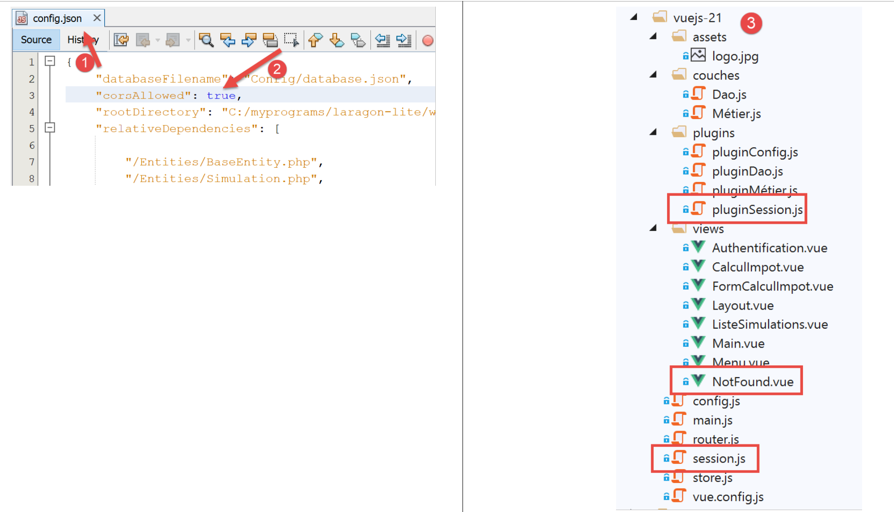
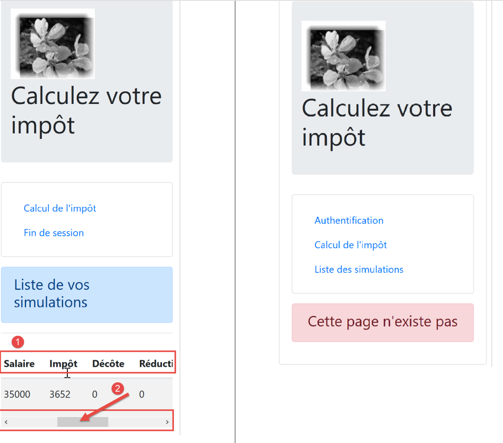

19. Améliorations du client Vue.js
19.1. Introduction
Nous allons tester le projet [vuejs-21] avec le serveur de développement. Nous allons donc avoir besoin de nouveau que le serveur envoie les entêtes CORS. Il faut donc que le fichier [config.json] de la version 14 du serveur de calcul de l’impôt autorise ces entêtes :

Le projet [vuejs-21] est créé initialement par duplication du projet [vuejs-20]. Il est ensuite modifié [3].
De nouveaux fichiers apparaissent :
- [session.js] : exporte un objet [session] qui va encapsuler des informations sur la session courante ;
- [pluginSession] : rend disponible l’objet [session] précédent dans la propriété [$session] des vues ;
- [NotFound.vue] : une nouvelle vue affichée lorsque l’utilisateur demande manuellement une URL qui n’existe pas ;
Des fichiers seront modifiés :
- [main.js] : va initialiser la session courante puis, lorsque l’utilisateur va taper manuellement des URL va la restaurer ;
- [router.js] : des contrôles sont ajoutés pour traiter le cas des URL tapées par l’utilisateur ;
- [store.js] : une nouvelle mutation est ajoutée ;
- [config.js] : une nouvelle configuration est ajoutée ;
- différentes vues essentiellement pour sauver la session courante à des moments clés de la vie de l’application. Celle-ci est ensuite restaurée à chaque fois que l’utilisateur tape manuellement des URL ;
19.2. Le store [Vuex]
Le script [./store] évolue de la façon suivante :
// plugin Vuex
import Vue from 'vue'
import Vuex from 'vuex'
Vue.use(Vuex);
// store Vuex
const store = new Vuex.Store({
state: {
// le tableau des simulations
simulations: [],
// le n° de la dernière simulation
idSimulation: 0
},
mutations: {
// suppression ligne n° index
deleteSimulation(state, index) {
...
},
// ajout d'une simulation
addSimulation(state, simulation) {
...
},
// nettoyage state
clear(state) {
// plus de simulations
state.simulations = [];
// la numérotation des simulations repart de 0
state.idSimulation = 0;
}
}
});
// export de l'objet [store]
export default store;
- lignes 24-29 : la mutation [clear] supprime la liste des simulations enregistrées et remet à 0 le n° de la dernière simulation.
19.3. La session
Le besoin d’une session vient du fait que lorsque l’utilisateur tape une URL dans le champ adresse du navigateur, le script [main.js] est exécuté de nouveau. Or celui-ci contient l’instruction :
// store Vuex
import store from './store'
Cette instruction importe le fichier [./store] suivant :
// plugin Vuex
import Vue from 'vue'
import Vuex from 'vuex'
Vue.use(Vuex);
// store Vuex
const store = new Vuex.Store({
state: {
// le tableau des simulations
simulations: [],
// le n° de la dernière simulation
idSimulation: 0
},
mutations: {
...
}
});
// export de l'objet [store]
export default store;
On voit, lignes 7-13, qu’on importe un tableau de simulations vide. Si donc on avait des simulations avant que l’utilisateur ne tape une URL dans le champ adresse du navigateur, après on n’en a plus. L’idée est :
- d’utiliser une session qui stockerait les informations qu’on veut conserver si l’utilisateur tape manuellement des URL ;
- de la sauvegarder à des moments clés de l’application ;
- de la restaurer dans [main.js] qui est toujours exécuté lorsqu’une URL est tapée manuellement ;
Le script [./session] est le suivant :
// on importe le store Vuex
import store from './store'
// on importe la configuration
import config from './config';
// l'objet [session]
const session = {
// session démarrée
started: false,
// authentification
authenticated: false,
// heure de sauvegarde
saveTime: "",
// couche [métier]
métier: null,
// état Vuex
state: null,
// sauvegarde de la session dans une chaîne jSON
save() {
// on ajoute à la session quelques proprités
this.saveTime = Date.now();
this.state = store.state;
// on la transforme en jSON
const json = JSON.stringify(this);
// on la stocke sur le navigateur
localStorage.setItem("session", json);
// eslint-disable-next-line no-console
console.log("session save", json);
},
// restauration de la session
restore() {
// on récupère la session jSON à partir du navigateur
const json = localStorage.getItem("session")
// si on a récupéré qq chose
if (json) {
// on restaure toutes les clés de la session
const restore = JSON.parse(json);
for (var key in restore) {
if (restore.hasOwnProperty(key)) {
this[key] = restore[key];
}
}
// si on a dépassé une certaine durée d'inactivité depuis le début de la session, on repart de zéro
let durée = Date.now() - this.saveTime;
if (durée > config.duréeSession) {
// on vide la session - elle sera également sauvegardée
session.clear();
} else {
// on régénère le store Vuex
store.replaceState(JSON.parse(JSON.stringify(this.state)));
}
}
// eslint-disable-next-line no-console
console.log("session restore", this);
},
// on nettoie la session
clear() {
// eslint-disable-next-line no-console
console.log("session clear");
// raz de certains champs de la session
this.authenticated = false;
this.saveTime = "";
this.started = false;
if (this.métier) {
// on réinitialise le champ [taxAdminData]
this.métier.taxAdminData = null;
}
// le store Vuex est nettoyé également
store.commit("clear");
// on sauvegarde la nouvelle session
this.save();
},
}
// export de l'objet [session]
export default session;
Commentaires
- ligne 2 : la session va encapsuler également le store [Vuex] (liste des simulations, n° de la dernière simulation faite) ;
- lignes 7-17 : les informations conservées par la session :
- [started] : la session jSON avec le serveur a démarré ou non ;
- [authenticated] : l’utilisateur s’est authentifié ou pas ;
- [saveTime] : la date en millisecondes de la dernière sauvegarde ;
- [métier] : une référence sur la couche [métier]. Celle-ci contient la donnée [taxAdminData] qui permet le calcul de l’impôt ;
- [state] : le state du store [Vuex] (liste des simulations, n° de la dernière simulation faite) ;
- lignes 20-30 : la méthode [save] sauvegarde la session localement sur le navigateur exécutant l’application ;
- ligne 22 : on note l’heure de sauvegarde ;
- ligne 23 : on récupère le [state] du store [Vuex] ;
- ligne 25 : on crée la chaîne jSON de la session ;
- ligne 27 : on la stocke localement sur le navigateur associée à la clé [session] ;
- lignes 33-57 : la méthode [restore] permet de restaurer une session à partir de sa sauvegarde locale sur le navigateur ;
- ligne 35 : on récupère la sauvegarde jSON locale ;
- ligne 37 : si on a récupéré quelque chose ;
- lignes 39-44 : l’objet [session] est reconstitué ;
- ligne 46 : on calcule la durée qui nous sépare de la dernière sauvegarde ;
- lignes 47-50 : si cette durée est supérieure à une valeur [config.duréeSession] fixée par configuration, la session est réinitialisée (ligne 49) et à cette occasion sauvegardée ;
- ligne 52 : sinon on régénère l’attribut [state] du store [Vuex] ;
- lignes 60-75 : la méthode [clear] réinitialise la session ;
- lignes 64-70 : les propriétés de la session sont réinitialisées à leurs valeurs initiales ;
- ligne 72 : ainsi que le store [Vuex] ;
- ligne 74 : la nouvelle session est sauvegardée ;
19.4. Le fichier de configuration [config]
Le fichier [./config] évolue de la façon suivante :
// utilisation de la bibliothèque [axios]
const axios = require('axios');
// timeout des requêtes HTTP
axios.defaults.timeout = 2000;
...
// export de la configuration
export default {
// objet [axios]
axios: axios,
// délai maximal d'inactivité de la session : 5 mn = 300 s = 300000 ms
duréeSession: 300000
}
- ligne 12 : on va gérer la session de l’application un peu comme on gère une session web. On fixe ici une durée d’inactivité maximale de 5 minutes ;
19.5. Le plugin [pluginSession]
Comme il a été fait déjà de nombreuses fois, le plugin [pluginSession] va permettre aux vues d’avoir accès à la session via la propriété [this.$session] :
export default {
install(Vue, session) {
// ajoute une propriété [$session] à la classe vue
Object.defineProperty(Vue.prototype, '$session', {
// lorsque Vue.$session est référencé, on rend le 2ième paramètre [session]
get: () => session,
})
}
}
19.6. Le script principal [main]
Le script principal [./main.js] évolue de la façon suivante :
// log de démarrage
// eslint-disable-next-line no-console
console.log("main started");
// imports
import Vue from 'vue'
...
// instanciation couche [métier]
import Métier from './couches/Métier';
const métier = new Métier();
// plugin [métier]
import pluginMétier from './plugins/pluginMétier'
Vue.use(pluginMétier, métier)
// store Vuex
import store from './store'
// session
import session from './session';
import pluginSession from './plugins/pluginSession'
Vue.use(pluginSession, session)
// on restore la session avant de redémarrer
session.restore();
// on restaure la couche [métier]
if (session.métier && session.métier.taxAdminData) {
métier.setTaxAdminData(session.métier.taxAdminData);
}
// démarrage de l'UI
new Vue({
el: '#app',
// le routeur
router: router,
// le store Vuex
store: store,
// la vue principale
render: h => h(Main),
})
// log de fin
// eslint-disable-next-line no-console
console.log("main terminated, session=", session);
- ligne 19 : on importe la session ;
- ligne 20 : on importe son plugin ;
- ligne 21 : le plugin [pluginSession] est intégré à [Vue]. Après cette instruction toutes les vues disposent de la session dans leur attribut [$session] ;
- ligne 27 : la session est restaurée. La session importée ligne 11 est alors initialisée avec le contenu de sa dernière sauvegarde ;
- après la ligne 16, les vues disposent d’une propriété [$métier] initialisée ligne 12. Cette propriété n’a pas l’information [taxAdminData] qui permet de calculer l’impôt ;
- lignes 30-32 : si la restauration qui vient d’être faite a restauré la propriété [session.métier.taxAdminData] alors la propriété [$métier] des vues est initialisée avec cette valeur ;
19.7. Le fichier de routage [router]
Le fichier de routage [./router] évolue comme suit :
// imports
import Vue from 'vue'
import VueRouter from 'vue-router'
// les vues
import Authentification from './views/Authentification'
import CalculImpot from './views/CalculImpot'
import ListeSimulations from './views/ListeSimulations'
import NotFound from './views/NotFound'
// la session
import session from './session'
// plugin de routage
Vue.use(VueRouter)
// les routes de l'application
const routes = [
// authentification
{ path: '/', name: 'authentification', component: Authentification },
{ path: '/authentification', name: 'authentification', component: Authentification },
// calcul de l'impôt
{
path: '/calcul-impot', name: 'calculImpot', component: CalculImpot,
meta: { authenticated: true }
},
// liste des simulations
{
path: '/liste-des-simulations', name: 'listeSimulations', component: ListeSimulations,
meta: { authenticated: true }
},
// fin de session
{
path: '/fin-session', name: 'finSession'
},
// page inconnue
{
path: '*', name: 'notFound', component: NotFound,
},
]
// le routeur
const router = new VueRouter({
// les routes
routes,
// le mode d'affichage des URL
mode: 'history',
// l'URL de base de l'application
base: '/client-vuejs-impot/'
})
// vérification des routes
router.beforeEach((to, from, next) => {
// eslint-disable-next-line no-console
console.log("router to=", to, "from=", from);
// route réservée aux utilisateurs authentifiés ?
if (to.meta.authenticated && !session.authenticated) {
next({
// on passe à l'authentification
name: 'authentification',
})
// retour à la boucle événementielle
return;
}
// cas particulier de la fin de session
if (to.name === "finSession") {
// on nettoie la session
session.clear();
// on va sur la vue [authentification]
next({
name: 'authentification',
})
// retour à la boucle événementielle
return;
}
// autres cas - vue suivante normale du routage
next();
})
// export du router
export default router
Commentaires
- lignes 16-38 : certaines routes ont été enrichies d’informations supplémentaires ;
- ligne 19 : on a créé une nouvelle route pour aller à la vue [Authentification] ;
- lignes 21-24 : la route qui mène à la vue [CalculImpot] a maintenant une propriété [meta] (ce nom est obligatoire). Le contenu de cet objet peut être quelconque et est fixé par le développeur ;
- ligne 23 : on met dans [meta], la propriété [authenticated] (ce nom peut être quelconque). Il signifiera pour nous que pour aller à la vue [CalculImpot], l’utilisateur doit être authentifié ;
- lignes 26-29 : on fait la même chose pour la route qui mène à la vue [ListeSimulations]. Là aussi, l’utilisateur doit être authentifié ;
- la propriété [meta.authenticated] va nous permettre de vérifier qu’un utilisateur qui tape manuellement les URL des vues [CalculImpot, ListeSimulations] ne peut pas les obtenir s’il n’est pas authentifié ;
- lignes 51-76 : la méthode [beforeEach] est exécutée avant qu’une vue ne soit routée. C’est le bon moment pour faire des vérifications ;
- [to] : la prochaine route si on ne fait rien ;
- [from] : la dernière route affichée ;
- [next] : fonction permettant de changer la prochaine route affichée ;
- ligne 55 : on regarde si la prochaine route demande à ce que l’utilisateur soit authentifié ;
- lignes 56-59 : si oui et que l’utilisateur n’est pas authentifié, on change la prochaine route vers la vue [Authentification] ;
- lignes 64-73 : on traite le cas particulier de la route [finSession] des lignes 30-32. Celle-ci n’a pas de vue associée ;
- ligne 66 : on réinitialise la session à sa valeur initiale ;
- lignes 68-70 : on programme la vue [Authentification] comme prochaine vue ;
- ligne 75 : si on n’est pas dans les deux cas précédents, on se contente de passer à la route prévue par le fichier de routage ;
- lignes 35-37 : on prévoit une vue [NotFound] si la route tapée par l’utilisateur ne correspond à aucune route connue. Cette vue est importée ligne 8. Les routes sont vérifiées dans l’ordre du fichier de routage. Si donc on arrive à la ligne 36, c’est que la route demandée n’est aucune des routes des lignes 18-33 ;
19.8. La vue [NotFound]
La vue [NotFound] est affichée si la route tapée par l’utilisateur ne correspond à aucune route connue :

Le code de la vue est le suivant :
<!-- définition HTML de la vue -->
<template>
<!-- mise en page -->
<Layout :left="true" :right="true">
<!-- alerte dans la colonne de droite -->
<template slot="right">
<!-- message sur fond jaune -->
<b-alert show variant="danger" align="center">
<h4>Cette page n'existe pas</h4>
</b-alert>
</template>
<!-- menu de navigation dans la colonne de gauche -->
<Menu slot="left" :options="options" />
</Layout>
</template>
<script>
// imports
import Layout from "./Layout";
import Menu from "./Menu";
export default {
// composants
components: {
Layout,
Menu
},
// état interne du composant
data() {
return {
// options du menu de navigation
options: [
{
text: "Authentification",
path: "/"
}
]
};
},
// cycle de vie
created() {
// eslint-disable-next-line
console.log("NotFound created");
// on regarde quelles options de menu offrir
if (this.$session.authenticated && this.$métier.taxAdminData) {
// l'utilisateur peut faire des simulations
Array.prototype.push.apply(this.options, [
{
text: "Calcul de l'impôt",
path: "/calcul-impot"
},
{
text: "Liste des simulations",
path: "/liste-des-simulations"
}
]);
}
}
};
</script>
Commentaires
- ligne 4 : elle utilise les deux colonnes des vues routées ;
- lignes 6-11 : un message d’erreur ;
- ligne 13 : le menu de navigation occupe la colonne de gauche ;
- lignes 31-36 : les options par défaut du menu ;
- lignes 40-57 : code exécuté lorsque la vue est créée ;
- ligne 44 : on regarde si l’utilisateur peut faire des simulations ;
- lignes 45-55 : si oui, on ajoute deux options au menu de navigation, celles où il faut être authentifié et avoir une couche [métier] opérationnelle (lignes 46-55) ;
19.9. La vue [Authentification]
La vue [Authentification] évolue comme suit :
<!-- définition HTML de la vue -->
<template>
<Layout :left="false" :right="true">
...
</Layout>
</template>
<!-- dynamique de la vue -->
<script>
import Layout from "./Layout";
export default {
// état du composant
data() {
return {
// utilisateur
user: "",
// son mot de passe
password: "",
// contrôle l'affichage d'un msg d'erreur
showError: false,
// le message d'erreur
message: ""
};
},
// composants utilisés
components: {
Layout
},
// propriétés calculées
computed: {
// saisies valides
valid() {
return this.user && this.password && this.$session.started;
}
},
// gestionnaires d'évts
methods: {
// ----------- authentification
async login() {
try {
// début attente
this.$emit("loading", true);
// on n'est pas encore authentifié
this.$session.authenticated = false;
// authentification bloquante auprès du serveur
const response = await this.$dao.authentifierUtilisateur(
this.user,
this.password
);
// fin du chargement
this.$emit("loading", false);
// analyse de la réponse du serveur
if (response.état != 200) {
// on affiche l'erreur
this.message = response.réponse;
this.showError = true;
// retour à la boucle événementielle
return;
}
// pas d'erreur
this.showError = false;
// on est authentifié
this.$session.authenticated = true;
// --------- on demande maintenant les données de l'administration fiscale
// au départ, pas de donnée
this.$métier.setTaxAdminData(null);
// début attente
this.$emit("loading", true);
// demande bloquante auprès du serveur
const response2 = await this.$dao.getAdminData();
// fin du chargement
this.$emit("loading", false);
// analyse de la réponse
if (response2.état != 1000) {
// on affiche l'erreur
this.message = response2.réponse;
this.showError = true;
// retour à la boucle événementielle
return;
}
// pas d'erreur
this.showError = false;
// on mémorise dans la couche [métier] la donnée reçue
this.$métier.setTaxAdminData(response2.réponse);
// on peut passer au calcul de l'impôt
this.$router.push({ name: "calculImpot" });
} catch (error) {
// on remonte l'erreur au composant principal
this.$emit("error", error);
} finally {
// maj session
this.$session.métier = this.$métier;
// on sauvegarde la session
this.$session.save();
}
}
},
// cycle de vie : le composant vient d'être créé
created() {
// eslint-disable-next-line
console.log("Authentification created");
// l'utilisateur peut-il faire des simulations ?
if (
this.$session.started &&
this.$session.authenticated &&
this.$métier.taxAdminData
) {
// alors l'utilisateur peut faire des simulations
this.$router.push({ name: "calculImpot" });
// retour à la boucle événementielle
return;
}
// si la session jSON a déjà été démarrée, on ne la redémarre pas de nouveau
if (!this.$session.started) {
// début attente
this.$emit("loading", true);
// on initialise la session avec le serveur - requête asynchrone
// on utilise la promesse rendue par les méthodes de la couche [dao]
this.$dao
// on initialise une session jSON
.initSession()
// on a obtenu la réponse
.then(response => {
// fin attente
this.$emit("loading", false);
// analyse de la réponse
if (response.état != 700) {
// on affiche l'erreur
this.message = response.réponse;
this.showError = true;
// retour à la boucle événementielle
return;
}
// la session a démarré
this.$session.started = true;
})
// en cas d'erreur
.catch(error => {
// on remonte l'erreur à la vue [Main]
this.$emit("error", error);
})
// dans tous les cas
.finally(() => {
// on sauvegarde la session
this.$session.save();
});
}
}
};
</script>
Commentaires
- on a surligné en jaune les instructions qui utilisent la session introduite dans cette version du client [Vue.js] ;
- lignes 97, 148 : à la fin des méthodes [login, created], la session est sauvegardée quelque soit le résultat des requêtes HTTP qui ont lieu dans ces méthodes (clause [finally] dans les deux cas) ;
- la méthode [created] des lignes 102-150 est exécutée à chaque fois que la vue [Authentification] est créée. Si c’est l’utilisateur qui a tapé l’URL de la vue, la session va nous permettre de savoir quoi faire ;
- lignes 106-115 : si la session jSON est démarrée, l’utilisateur authentifié et la donnée [this.$métier.taxAdminData] initialisée alors l’utilisateur peut directement aller au formulaire de calcul de l’impôt (ligne 112) ;
- ligne 117 : la méthode [created] était utilisée dans la version précédente pour initialiser une session jSON avec le serveur. Cette phase est inutile si elle a déjà eu lieu ;
- lignes 42-66 : la méthode d’authentification ;
- ligne 66 : si l’authentification réussit, on le note dans la session ;
- lignes 67-92 : la demande au serveur des données de l’administration fiscale [taxAdminData] ;
- ligne 95 : à la fin de cette phase, on met à jour la propriété [métier] de la session que l’opération ait réussi ou pas ;
19.10. La vue [CalculImpot]
Le code de la vue [CalculImpot] évolue comme suit :
<!-- définition HTML de la vue -->
<template>
...
</template>
<script>
// imports
import FormCalculImpot from "./FormCalculImpot";
import Menu from "./Menu";
import Layout from "./Layout";
export default {
// état interne
data() {
return {
// options du menu
options: [
{
text: "Liste des simulations",
path: "/liste-des-simulations"
},
{
text: "Fin de session",
path: "/fin-session"
}
],
// résultat du calcul de l'impôt
résultat: "",
résultatObtenu: false
};
},
// composants utilisés
components: {
Layout,
FormCalculImpot,
Menu
},
// méthodes de gestion des évts
methods: {
// résultat du calcul de l'impôt
handleResultatObtenu(résultat) {
// on construit le résultat en chaîne HTML
...
// une simulation de +
this.$store.commit("addSimulation", résultat);
// on sauvegarde la session
this.$session.save();
}
},
// cycle de vie
created() {
// eslint-disable-next-line
console.log("CalculImpot created");
}
};
</script>
Commentaires
- ligne 45 : la simulation calculée est ajoutée au store [Vuex]. Cela a un impact sur la session qui englobe la propriété [state] du store. Aussi sauvegarde-t-on la session (ligne 47) ;
- ligne 51 : on crée une méthode [created] pour suivre dans les logs les créations des vues ;
19.11. La vue [ListeSimulations]
La vue [ListeSimulations] évolue comme suit :
<!-- définition HTML de la vue -->
<template>
...
</div>
</template>
<script>
// imports
import Layout from "./Layout";
import Menu from "./Menu";
export default {
// composants
components: {
Layout,
Menu
},
// état interne
data() {
...
},
// état interne calculé
computed: {
// liste des simulations prise dans le store Vuex
simulations() {
return this.$store.state.simulations;
}
},
// méthodes
methods: {
supprimerSimulation(index) {
// eslint-disable-next-line
console.log("supprimerSimulation", index);
// suppression de la simulation n° [index]
this.$store.commit("deleteSimulation", index);
// on sauvegarde la session
this.$session.save();
}
},
// cycle de vie
created() {
// eslint-disable-next-line
console.log("ListeSimulations created");
}
};
</script>
Commentaires
- ligne 36 : après la suppression d’une simulation ligne 34, on sauvegarde la session pour tenir compte de ce changement d’état ;
- lignes 40-43 : on continue à suivre la création des vues ;
19.12. Exécution du projet

Lors des tests vérifiez les points suivants :
- si l’utilisateur ‘utilise’ l’application via les liens du menu de navigation et les boutons / liens d’action, celle-ci fonctionne ;
- si l’utilisateur tape manuellement des URL, l’application continue à fonctionner. Faites en particulier le test suivant :
- faites simulations ;
- une fois sur la vue [ListeSimulations], rechargez (F5) la vue. Dans l’application précédente [vuejs-20], on perdait alors les simulations. Ici ce n’est pas le cas : on retrouve bien les simulations déjà faites ;
- regardez les logs pour comprendre :
- à quel moment le script [main] est exécuté. Vous devez voir qu’il l’est à chaque fois que l’utilisateur tape une URL à la main ;
- à quels moments les vues sont créées. Vous devez voir qu’elles le sont à chaque fois qu’elles vont être affichées ;
- le fonctionnement du routage. Avant chaque routage un log est fait qui vous indique :
- la route d’où vous venez ;
- la route où vous allez ;
19.13. Déploiement de l’application sur un serveur local
Comme exercice, suivez le paragraphe |Déploiement sur un serveur local|, pour déployer le projet [vuejs-21] sur le serveur Laragon local. Puis testez-le.
19.14. Mise au point de la version mobile
Théoriquement, l’utilisation de Bootstrap devrait nous permettre d’avoir une application utilisable sur différents média : smartphone, tablette, ordinateurs portable et de bureau. Cequi différencie ces média c’est la taille de leur écran.
Si on teste la version [vuejs-21] sur un mobile, on constate que c’est le chaos dans l’affichage des vues. La version [vuejs-22] corrige ce point. Les modifications ont toutes lieu dans les templates des vues. Elles ont consisté essentiellement à mettre au point un affichage pour un écran de smartphone. Lorsque celui-ci est au point, l’affichage sur des écrans de taille plus importante se passe de façon fluide grâce à Bootstrap.

19.14.1. La vue [Main]
La vue [Main] évolue de la façon suivante :
<!-- définition HTML de la vue -->
<template>
<div class="container">
<b-card>
<!-- jumbotron -->
<b-jumbotron>
<b-row>
<b-col sm="4">
<img src="../assets/logo.jpg" alt="Cerisier en fleurs" />
</b-col>
<b-col sm="8">
<h1>Calculez votre impôt</h1>
</b-col>
</b-row>
</b-jumbotron>
....
</b-card>
</div>
</template>
Commentaires
- ligne 8 : là où il y avait [cols=’4’] on écrit [sm=’4’]. [sm] signifie [small]. Les écrans des smartphones tombent dans cette catégorie. Les autres catégories sont [xs=extra small, md=medium, lg=large, xl=extra large] ;
- ligne 11 : idem ;
19.14.2. La vue [Layout]
La vue [Layout] évolue comme suit :
<!-- définition HTML de la mise en page de la vue routée -->
<template>
<!-- ligne -->
<div>
<b-row>
<!-- zone de trois colonnes à gauche -->
<b-col sm="3" v-if="left">
<slot name="left" />
</b-col>
<!-- zone de neuf colonnes à droite -->
<b-col sm="9" v-if="right">
<slot name="right" />
</b-col>
</b-row>
</div>
</template>
19.14.3. La vue [Authentification]
La vue [Authentification] évolue comme suit :
<!-- définition HTML de la vue -->
<template>
<Layout :left="false" :right="true">
<template slot="right">
<!-- formulaire HTML - on poste ses valeurs avec l'action [authentifier-utilisateur] -->
<b-form @submit.prevent="login">
<!-- titre -->
<b-alert show variant="primary">
<h4>Bienvenue. Veuillez vous authentifier pour vous connecter</h4>
</b-alert>
<!-- 1ère ligne -->
<b-form-group label="Nom d'utilisateur" label-for="user" description="Tapez admin">
<!-- zone de saisie user -->
<b-col sm="6">
<b-form-input type="text" id="user" placeholder="Nom d'utilisateur" v-model="user" />
</b-col>
</b-form-group>
<!-- 2ième ligne -->
<b-form-group label="Mot de passe" label-for="password" description="Tapez admin">
<!-- zone de saisie password -->
<b-col sm="6">
<b-input type="password" id="password" placeholder="Mot de passe" v-model="password" />
</b-col>
</b-form-group>
<!-- 3ième ligne -->
<b-alert
show
variant="danger"
v-if="showError"
class="mt-3"
>L'erreur suivante s'est produite : {{message}}</b-alert>
<!-- bouton de type [submit] sur une 3ième ligne -->
<b-row>
<b-col sm="2">
<b-button variant="primary" type="submit" :disabled="!valid">Valider</b-button>
</b-col>
</b-row>
</b-form>
</template>
</Layout>
</template>
Commentaires
- lignes 11 et 19 : on a supprimé l’attribut [label-cols] qui fixait un nombre de colonnes au label de la saisie. En l’absence de cet attribut, le label est au-dessus de la zone de saisie. Cela convient mieux aux écrans des smartphones ;
19.14.4. La vue [CalculImpot]
La vue [CalculImpot] évolue comme suit :
<!-- définition HTML de la vue -->
<template>
<div>
<Layout :left="true" :right="true">
<!-- formulaire de calcul de l'impôt à droite -->
<FormCalculImpot slot="right" @resultatObtenu="handleResultatObtenu" />
<!-- menu de navigation à gauche -->
<Menu slot="left" :options="options" />
</Layout>
<!-- zone d'affichage des résultat du calcul de l'impôt sous le formulaire -->
<b-row v-if="résultatObtenu" class="mt-3">
<!-- zone de trois colonnes vide -->
<b-col sm="3" />
<!-- zone de neuf colonnes -->
<b-col sm="9">
<b-alert show variant="success">
<span v-html="résultat"></span>
</b-alert>
</b-col>
</b-row>
</div>
</template>
19.14.5. La vue [FormCalculImpot]
La vue [FormCalculImpot] évolue comme suit :
<!-- définition HTML de la vue -->
<template>
<!-- formulaire HTML -->
<b-form @submit.prevent="calculerImpot" class="mb-3">
<!-- message sur 12 colonnes sur fond bleu -->
<b-row>
<b-col sm="12">
<b-alert show variant="primary">
<h4>Remplissez le formulaire ci-dessous puis validez-le</h4>
</b-alert>
</b-col>
</b-row>
<!-- éléments du formulaire -->
<!-- première ligne -->
<b-form-group label="Etes-vous marié(e) ou pacsé(e) ?">
<!-- boutons radio sur 5 colonnes-->
<b-col sm="5">
<b-form-radio v-model="marié" value="oui">Oui</b-form-radio>
<b-form-radio v-model="marié" value="non">Non</b-form-radio>
</b-col>
</b-form-group>
<!-- deuxième ligne -->
<b-form-group label="Nombre d'enfants à charge" label-for="enfants">
<b-form-input
type="text"
id="enfants"
placeholder="Indiquez votre nombre d'enfants"
v-model="enfants"
:state="enfantsValide"
></b-form-input>
<!-- message d'erreur éventuel -->
<b-form-invalid-feedback :state="enfantsValide">Vous devez saisir un nombre positif ou nul</b-form-invalid-feedback>
</b-form-group>
<!-- troisème ligne -->
<b-form-group
label="Salaire annuel net imposable"
label-for="salaire"
description="Arrondissez à l'euro inférieur"
>
<b-form-input
type="text"
id="salaire"
placeholder="Salaire annuel"
v-model="salaire"
:state="salaireValide"
></b-form-input>
<!-- message d'erreur éventuel -->
<b-form-invalid-feedback :state="salaireValide">Vous devez saisir un nombre positif ou nul</b-form-invalid-feedback>
</b-form-group>
<!-- quatrième ligne, bouton [submit] -->
<b-col sm="3">
<b-button type="submit" variant="primary" :disabled="formInvalide">Valider</b-button>
</b-col>
</b-form>
</template>
Commentaires
- lignes 15, 23, 35 : on a supprimé l’attribut [label-cols] ;
Par ailleurs, on fait évoluer les tests de validité :
...
// état interne calculé
computed: {
// validation du formulaire
formInvalide() {
return (
// salaire invalide
!this.salaire.match(/^\s*\d+\s*$/) ||
// ou enfants invalide
!this.enfants.match(/^\s*\d+\s*$/) ||
// ou données fiscales pas obtenues
!this.$métier.taxAdminData
);
},
// validation du salaire
salaireValide() {
// doit être numérique >=0
return Boolean(
this.salaire.match(/^\s*\d+\s*$/) || this.salaire.match(/^\s*$/)
);
},
// validation des enfants
enfantsValide() {
// doit être numérique >=0
return Boolean(
this.enfants.match(/^\s*\d+\s*$/) || this.enfants.match(/^\s*$/)
);
}
},
...
Commentaires
- ligne 19 : lorsque rien n’a été saisi, la saisie est considérée comme valide. Cela permet d’avoir une saisie valide lorsque la vue est initialement affichée. Dans la version précédente, la saisie apparaissait initialement comme erronée ;
- ligne 26 : idem ;
- lignes 5-14 : le bouton de validation n’est actif que si les deux saisies contiennent quelque chose et sont valides ;
19.14.6. La vue [Menu]
La vue [Menu] évolue comme suit :
<!-- définition HTML de la vue -->
<template>
<b-card class="mb-3">
<!-- menu Bootstrap vertical -->
<b-nav vertical>
<!-- options du menu -->
<b-nav-item
v-for="(option,index) of options"
:key="index"
:to="option.path"
exact
exact-active-class="active"
>{{option.text}}</b-nav-item>
</b-nav>
</b-card>
</template>
Commentaires
- ligne 3 : on ajoute la balise <b-card> pour entourer le menu d’une fine bordure. Cela permet de mieux localiser le menu sur le smartphone ;
19.14.7. La vue [ListeSimulations]
La vue [ListeSimulations] reste inchangée :
<!-- définition HTML de la vue -->
<template>
<div>
<!-- mise en page -->
<Layout :left="true" :right="true">
<!-- simulations dans colonne de droite -->
<template slot="right">
<template v-if="simulations.length==0">
<!-- pas de simulations -->
<b-alert show variant="primary">
<h4>Votre liste de simulations est vide</h4>
</b-alert>
</template>
<template v-if="simulations.length!=0">
<!-- il y a des simulations -->
<b-alert show variant="primary">
<h4>Liste de vos simulations</h4>
</b-alert>
<!-- tableau des simulations -->
<b-table striped hover responsive :items="simulations" :fields="fields">
<template v-slot:cell(action)="data">
<b-button variant="link" @click="supprimerSimulation(data.index)">Supprimer</b-button>
</template>
</b-table>
</template>
</template>
<!-- menu de navigation dans colonne de gauche -->
<Menu slot="left" :options="options" />
</Layout>
</div>
</template>
Commentaires
- ligne 20 : on notera l’attribut [responsive] qui fait que l’affichage de la table s’adapte à la taille de l’écran :

- en [2], sur les petits écrans, une barre de défilement horizontal permet d’afficher la table ;
19.14.8. La vue [NotFound]
Elle reste inchangée.
19.14.9. Les vues sur mobile


Note : il y a sûrement possibilité d’obtenir des vues encore mieux adaptées au mobile. Je pense notamment au menu de navigation qui pourrait être amélioré mais il y a d’autres points. Ce document n’avait pas pour objectif premier la création d’une application mobile. Dans ce cas, on se serait peut-être tourné vers un framework comme Ionic |https://ionicframework.com/|.